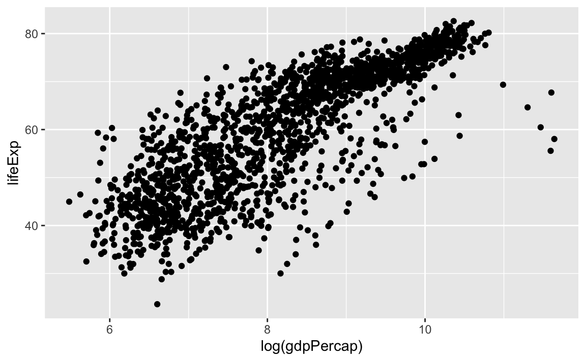
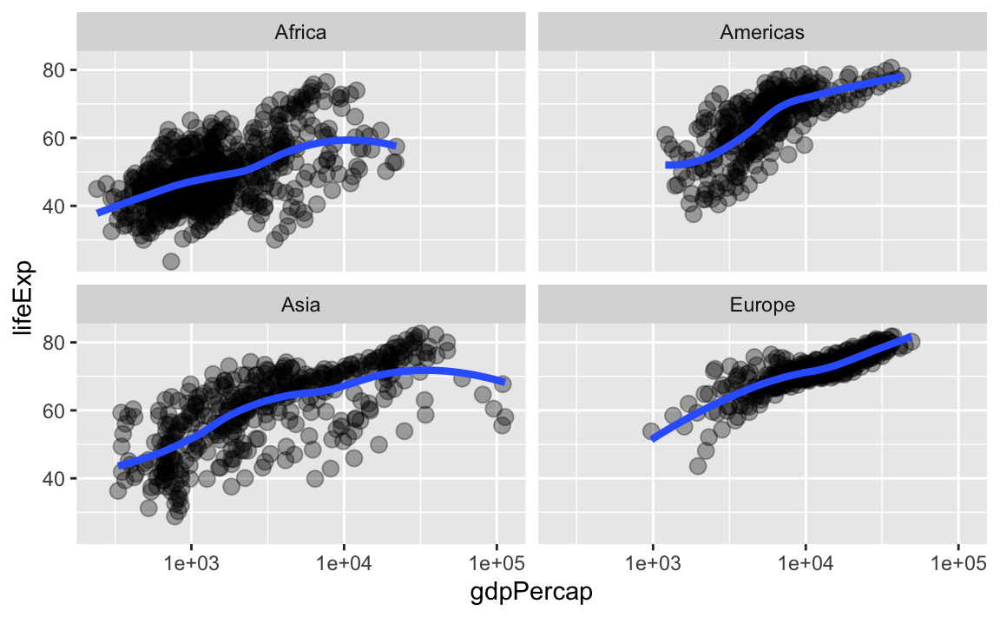
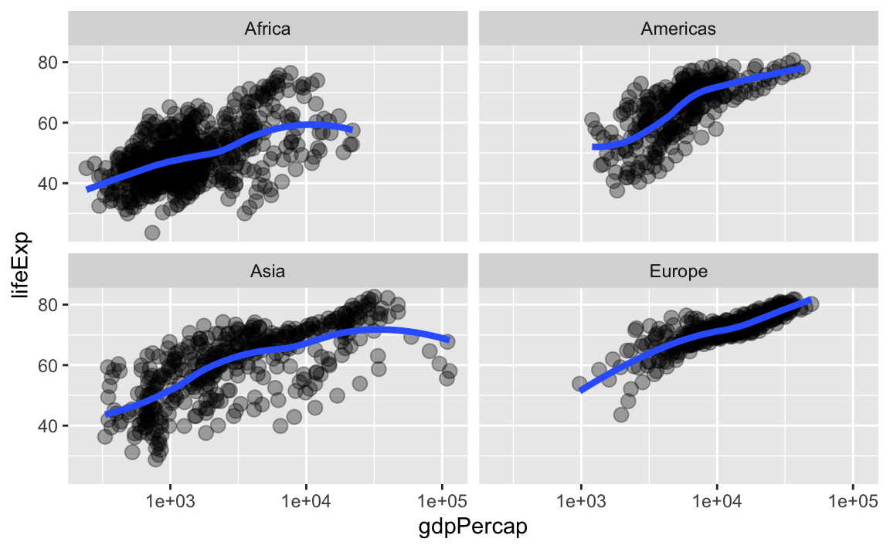

Kapitel 5 Letzte Vorbereitungen …
Jetzt ist es an der Zeit, sich zu vergewissern in welchem Verzeichnis auf deinem Computer du dich befindest. Falls du ein RStudio Projekt nutzt, sollte diese Frage leicht zu beantworten sein. Falls du trotzdem unsicher bist, gib getwd() in der Konsole ein, um das aktuelle Arbeitsverzeichnis zu sehen.
Alle nachfolgenden Code Beispiele wollen wir abspeichern in einer .R Datei, die wir im aktuellen Arbeitsverzeichnis abspeichern wollen. Idealerweise geben wir dieser Datei noch einen Namen, wie etwa datenanalyse_teil_1.R, der uns schon viel über den möglichen Inhalt erzählt.
Alternativ können wir alle Befehle natürlich auch in eine R Markdown Datei schreiben, siehe Test drive R Markdown.
Prinzipiell geht es in den folgenden Abschnitten um Datenmanagement. Es werden aber auch immer wieder ein paar Grafiken zu sehen sein. Dies ist aber kein Problem, da wir ja bereits den Data Visualization Basics Primer

besucht haben und so den nötigen Background haben.
5.1 Data Frames sind fantastisch
Das Standardformat für Daten ist ein data frame. Die meisten Funktionen zur Inferenz, Modellierung und graphischen Darstellung erwarten, dass ihnen über ein data = Argument ein data frame übergeben wird. Dies gilt für die Basis R schon seit langem.
Die als tidyverse bekannte Kollektion von Paketen geht noch einen Schritt weiter und priorisiert ausdrücklich die Verarbeitung von data frames. Tatsächlich priorisiert tidyverse eine besondere Art von data frames, die als “tibble” bezeichnet wird.
Data frames - im Gegensatz zu allgemeinen Arrays oder speziell Matrizen in R - können Variablen unterschiedlicher Typen enthalten, wie z. B. Textdaten (Subjekt-ID oder Name), quantitative Daten (Anzahl der weißen Blutkörperchen) und kategoriale Informationen (behandelt vs. unbehandelt). Genauer gesagt können in data frames unterschiedliche Spalten aus unterschiedlichen Datentypen bestehen. Innerhalb einer Spalte müssen aber alle Einträge vom gleichen Typ sein.
Daten aus einer Datenanalyse bestehen immer aus mehr als einem Datentyp. Aus diesem Grund können Matrizen oder Arrays nicht zur Datenanalyse verwendet werden, da man sonst mit verschiedenen, unverbundenen Objekten (Matrizen, Arrays) arbeiten müsste und diese nur schwer koordinieren kann.
5.2 Gapminder data
Wir werden mit einigen der Daten aus dem [Gapminder-Projekt] (https://www.gapminder.org)

arbeiten. Die Daten sind im gapminder Paket enthalten, welches wir über CRAN installieren können:
Um die Daten zu verwenden, müssen wir das Paket natürlich auch noch laden
5.3 Die gapminder Daten sind ein “tibble”
Durch das Laden des gapminder Pakets haben wir nun Zugriff auf einen Datenobjekt mit demselben Namen. Schau dir nun mithilfe der Funktion str() die Struktur des Objekts an.
str(gapminder)
#> tibble [1,704 × 6] (S3: tbl_df/tbl/data.frame)
#> $ country : Factor w/ 142 levels "Afghanistan",..: 1 1 1 1 1 1 1 1 1 1 ...
#> $ continent: Factor w/ 5 levels "Africa","Americas",..: 3 3 3 3 3 3 3 3 3 3 ...
#> $ year : int [1:1704] 1952 1957 1962 1967 1972 1977 1982 1987 1992 1997 ...
#> $ lifeExp : num [1:1704] 28.8 30.3 32 34 36.1 ...
#> $ pop : int [1:1704] 8425333 9240934 10267083 11537966 13079460 14880372..
#> $ gdpPercap: num [1:1704] 779 821 853 836 740 ...str() liefert eine vernünftige Beschreibung von fast allem, und im schlimmsten Fall kann tatsächlich auch nichts “Schlimmes” passieren. Aus dem Output erkennen wir, dass der Datensatz 1704 Beobachtungen enthält.
Auf der anderen Seite hätten wir durch direkten Aufruf von gapminder den Inhalt auch direkt auf den Bildschirm schreiben können. Aber vielleicht hast du schon mal einen größeren Datensatz aufgerufen und zögerst nun etwas, da große Datensätze einfach die Konsole füllen und nur sehr wenig Einblick bieten.
Dies ist der erste große Sieg für tibbles. Tidyverse bietet eine spezielle data frame Variante an: ein “tibble”. Dies wird auch verdeutlicht, wenn man sich z.B. die Klasse des gapminder Objekts anschaut
Schau, es ist immer noch ein reguläres data frame, aber eben auch ein tibble.
Jetzt können wir gapminder einfach auf den Bildschirm anzeigen! Da es sich um ein tibble handelt, wird nur das Wichtigste angezeigt und deine Konsole läuft nicht voll.
gapminder
#> # A tibble: 1,704 x 6
#> country continent year lifeExp pop gdpPercap
#> <fct> <fct> <int> <dbl> <int> <dbl>
#> 1 Afghanistan Asia 1952 28.8 8425333 779.
#> 2 Afghanistan Asia 1957 30.3 9240934 821.
#> 3 Afghanistan Asia 1962 32.0 10267083 853.
#> 4 Afghanistan Asia 1967 34.0 11537966 836.
#> 5 Afghanistan Asia 1972 36.1 13079460 740.
#> 6 Afghanistan Asia 1977 38.4 14880372 786.
#> 7 Afghanistan Asia 1982 39.9 12881816 978.
#> 8 Afghanistan Asia 1987 40.8 13867957 852.
#> 9 Afghanistan Asia 1992 41.7 16317921 649.
#> 10 Afghanistan Asia 1997 41.8 22227415 635.
#> # … with 1,694 more rowsWenn du mit einem reinen data frame arbeitest - und dieses Feature magst - kannst du es mit as_tibble() in ein tibble transformieren.
library(tidyverse)
as_tibble(iris)
#> # A tibble: 150 x 5
#> Sepal.Length Sepal.Width Petal.Length Petal.Width Species
#> <dbl> <dbl> <dbl> <dbl> <fct>
#> 1 5.1 3.5 1.4 0.2 setosa
#> 2 4.9 3 1.4 0.2 setosa
#> 3 4.7 3.2 1.3 0.2 setosa
#> 4 4.6 3.1 1.5 0.2 setosa
#> 5 5 3.6 1.4 0.2 setosa
#> 6 5.4 3.9 1.7 0.4 setosa
#> 7 4.6 3.4 1.4 0.3 setosa
#> 8 5 3.4 1.5 0.2 setosa
#> 9 4.4 2.9 1.4 0.2 setosa
#> 10 4.9 3.1 1.5 0.1 setosa
#> # … with 140 more rowsWeitere Möglichkeiten, grundlegende Informationen zu einem data frame abzufragen:
names(gapminder)
#> [1] "country" "continent" "year" "lifeExp" "pop" "gdpPercap"
ncol(gapminder)
#> [1] 6
length(gapminder)
#> [1] 6
dim(gapminder)
#> [1] 1704 6
nrow(gapminder)
#> [1] 1704Ein bisschen deskriptive Statistik zum Inhalt eines data frames erhältst du mit summary():
summary(gapminder)
#> country continent year lifeExp
#> Afghanistan: 12 Africa :624 Min. :1952 Min. :23.6
#> Albania : 12 Americas:300 1st Qu.:1966 1st Qu.:48.2
#> Algeria : 12 Asia :396 Median :1980 Median :60.7
#> Angola : 12 Europe :360 Mean :1980 Mean :59.5
#> Argentina : 12 Oceania : 24 3rd Qu.:1993 3rd Qu.:70.8
#> Australia : 12 Max. :2007 Max. :82.6
#> (Other) :1632
#> pop gdpPercap
#> Min. :6.00e+04 Min. : 241
#> 1st Qu.:2.79e+06 1st Qu.: 1202
#> Median :7.02e+06 Median : 3532
#> Mean :2.96e+07 Mean : 7215
#> 3rd Qu.:1.96e+07 3rd Qu.: 9325
#> Max. :1.32e+09 Max. :113523
#> Bemerkung:
summary()ist eine generische Funktion. Für eine gegebene Klasse (des Inputs) bestimmt die generische Funktion die passende Methode. Die Funktionsummary()besitzt die folgenden Methoden:
methods(summary)
#> [1] summary,ANY-method summary,DBIObject-method
#> [3] summary.aov summary.aovlist*
#> [5] summary.aspell* summary.check_packages_in_dir*
#> [7] summary.connection summary.data.frame
#> [9] summary.Date summary.default
#> [11] summary.Duration* summary.ecdf*
#> [13] summary.factor summary.ggplot*
#> [15] summary.glm summary.haven_labelled*
#> [17] summary.hcl_palettes* summary.infl*
#> [19] summary.Interval* summary.lm
#> [21] summary.loess* summary.manova
#> [23] summary.matrix summary.mlm*
#> [25] summary.nls* summary.packageStatus*
#> [27] summary.Period* summary.POSIXct
#> [29] summary.POSIXlt summary.ppr*
#> [31] summary.prcomp* summary.princomp*
#> [33] summary.proc_time summary.rlang_error*
#> [35] summary.rlang_trace* summary.srcfile
#> [37] summary.srcref summary.stepfun
#> [39] summary.stl* summary.table
#> [41] summary.tukeysmooth* summary.vctrs_sclr*
#> [43] summary.vctrs_vctr* summary.warnings
#> see '?methods' for accessing help and source codeObwohl wir uns formell noch nicht eingehender mit der Visualisierung beschäftigt haben, ist es wichtig ein paar Grafiken zu erzeugen um einen ersten Eindruck über den Datensatz zu bekommen. Auf der anderen Seite werden die Grafiken aber auch nicht (viel) aufwendiger als im Data Visualisation Basics Primer



Grafiken dieser Art werden wir zu einem späteren Zeitpunkt noch genauer behandeln. Dann sprechen wir auch über deren Inhalt.
Wir schauen uns nochmal die Ausgabe von str() an, um darüber zu sprechen, was ein data frame genau ist.
str(gapminder)
#> tibble [1,704 × 6] (S3: tbl_df/tbl/data.frame)
#> $ country : Factor w/ 142 levels "Afghanistan",..: 1 1 1 1 1 1 1 1 1 1 ...
#> $ continent: Factor w/ 5 levels "Africa","Americas",..: 3 3 3 3 3 3 3 3 3 3 ...
#> $ year : int [1:1704] 1952 1957 1962 1967 1972 1977 1982 1987 1992 1997 ...
#> $ lifeExp : num [1:1704] 28.8 30.3 32 34 36.1 ...
#> $ pop : int [1:1704] 8425333 9240934 10267083 11537966 13079460 14880372..
#> $ gdpPercap: num [1:1704] 779 821 853 836 740 ...Ein data frame ist ein Sonderfall einer Liste, die in R verwendet wird, um so gut wie alles aufzunehmen. Data frames sind ein Spezialfall, bei dem die Länge jedes Listenelements gleich ist.
Nehmen wir mal an, dass wir eine Beschreibung der Variablen
zusammen mit den Daten abspeichern wollen. Dazu könnten wir ein tibble
(desc <- tibble(variables = names(gapminder),
desc = c("factor with 142 levels", "factor with 5 levels",
"ranges from 1952 to 2007 in increments of 5 years",
"life expectancy at birth, in years",
"population","GDP per capita (US$, inflation-adjusted)")))
#> # A tibble: 6 x 2
#> variables desc
#> <chr> <chr>
#> 1 country factor with 142 levels
#> 2 continent factor with 5 levels
#> 3 year ranges from 1952 to 2007 in increments of 5 years
#> 4 lifeExp life expectancy at birth, in years
#> 5 pop population
#> 6 gdpPercap GDP per capita (US$, inflation-adjusted)erzeugen, das die Beschreibungen enthält. Dieses data frame hat nun die Dimension 6x2. Trotzdem können wir es mit gapminder kombinieren, wenn wir beide tibbles in einer Liste abspeichern
gapminder_desc <- list(gapminder, desc)
str(gapminder_desc)
#> List of 2
#> $ : tibble [1,704 × 6] (S3: tbl_df/tbl/data.frame)
#> ..$ country : Factor w/ 142 levels "Afghanistan",..: 1 1 1 1 1 1 1 1 1 1 ...
#> ..$ continent: Factor w/ 5 levels "Africa","Americas",..: 3 3 3 3 3 3 3 3 3 ..
#> ..$ year : int [1:1704] 1952 1957 1962 1967 1972 1977 1982 1987 1992 199..
#> ..$ lifeExp : num [1:1704] 28.8 30.3 32 34 36.1 ...
#> ..$ pop : int [1:1704] 8425333 9240934 10267083 11537966 13079460 14880..
#> ..$ gdpPercap: num [1:1704] 779 821 853 836 740 ...
#> $ : tibble [6 × 2] (S3: tbl_df/tbl/data.frame)
#> ..$ variables: chr [1:6] "country" "continent" "year" "lifeExp" ...
#> ..$ desc : chr [1:6] "factor with 142 levels" "factor with 5 levels" "r"..5.4 Variablen in einem Data Frame
Um eine einzelne Variable aus einem data frame anzusprechen, kann man mit dem Dollarzeichen $ arbeiten. Wir schauen uns dazu die numerische Variable lifeExp an.
head(gapminder$lifeExp)
#> [1] 28.8 30.3 32.0 34.0 36.1 38.4
summary(gapminder$lifeExp)
#> Min. 1st Qu. Median Mean 3rd Qu. Max.
#> 23.6 48.2 60.7 59.5 70.8 82.6Zusätzlich wollen wir die noch die Verteilung von lifeExp visualisieren und plotten dazu ein Histogramm. Da wir dazu ggplot() verwenden, können wir lifeExp wieder direkt aufrufen.
ggplot(gapminder, mapping = aes(x = lifeExp)) +
geom_histogram()
#> `stat_bin()` using `bins = 30`. Pick better value with `binwidth`.
Alternativ können wir die Einträge eines data frames auch über die eckigen Klammern [] indizieren.
summary(gapminder[,"lifeExp"])
#> lifeExp
#> Min. :23.6
#> 1st Qu.:48.2
#> Median :60.7
#> Mean :59.5
#> 3rd Qu.:70.8
#> Max. :82.6Dabei spezifiziert der Eintrag links vom Komma die Zeilen und der Wert rechts davon die Spalten. Dies ist hilfreich, wenn man auf einzelne Werte zugreifen will. Aber beim Aufruf einer kompletten Variable (Spalte) ist die $ Notation sicherlich vorteilhaft.
Die Variable year ist eine ganzzahlige Variable, aber da es so wenige unterschiedliche Werte gibt, funktioniert sie auch ein wenig wie eine kategoriale Variable.
summary(gapminder$year)
#> Min. 1st Qu. Median Mean 3rd Qu. Max.
#> 1952 1966 1980 1980 1993 2007
table(gapminder$year)
#>
#> 1952 1957 1962 1967 1972 1977 1982 1987 1992 1997 2002 2007
#> 142 142 142 142 142 142 142 142 142 142 142 142Die Variablen country und continent enthalten rein kategorische Informationen, die in R (häufig) als factor gespeichert werden.
class(gapminder$continent)
#> [1] "factor"
summary(gapminder$continent)
#> Africa Americas Asia Europe Oceania
#> 624 300 396 360 24
levels(gapminder$continent)
#> [1] "Africa" "Americas" "Asia" "Europe" "Oceania"
nlevels(gapminder$continent)
#> [1] 5Die Levels von continent sind “Afrika”, “America” usw., und das ist es, was einem normalerweise in R angezeigt werden sollte, wenn man eine Faktorvariable aufruft. Im Allgemeinen sind die Levels von Menschen lesbare Zeichenfolgen, wie “male/female” und “control/treated”. Aber vergiss niemals, dass R diese Information in kodierter Form speichert. Schauen dir zum Beispiel das Ergebnis von str(gapminder$continent) an, falls du skeptisch sein solltest.
Faktorvariablen haben Vor- und Nachteil. Im weiteren Verlauf zeigen wir sowohl die Vor- wie auch die Nachteile. Generell ist aber durchaus so, dass die Vorteile überwiegen.
Als Nächstes erstellen wir mit der Funktion table() eine Häufigkeitstabelle für die Variable count. Dieser Inhalt wird anschließend visualisiert über die Funktion geom_bar(). Die entsprechende Berechnung der Häufigkeitstabelle wird dabei aber sowohl von table() wie auch von geom_bar() (über die statistische Transformation stat_count()) durchgeführt, oder anders gesagt, wir können an geom_bar() den Datensatz (hier gapminder) anstatt von vorab berechneten Werten übergeben.
table(gapminder$continent)
#>
#> Africa Americas Asia Europe Oceania
#> 624 300 396 360 24
ggplot(gapminder, aes(x = continent)) + geom_bar()
In den folgenden Abbildungen sehen wir, wie Faktoren in Zahlen umgesetzt werden können. Der continent-Faktor lässt sich durch das ggplot2-Paket leicht in “Facetten” oder Farben und eine Legende abbilden.
Die Erstellung von Grafiken mit ggplot2 werden wir noch genauer besprechen. Daher kannst du dich also ruhig zurücklehnen und die Plots genießen oder blind kopieren/einfügen.
# wir initialisieren ein grafik (ohne inhalt)
p <- ggplot(filter(gapminder, continent != "Oceania"),
aes(x = gdpPercap, y = lifeExp))
p <- p + scale_x_log10() # auf der x-achse soll eine log skala verwendet werden
p + geom_point() # ein scatterplot
p + geom_point(aes(color = continent)) # für verschiedene kontinente werden verschiedene farben verwendet
p + geom_point(alpha = (1/3), size = 3) + # punkte mit transparenz
geom_smooth(lwd = 3, se = FALSE) # geglätter zusammenhang
#> `geom_smooth()` using method = 'gam' and formula 'y ~ s(x, bs = "cs")'
p + geom_point(alpha = (1/3), size = 3) +
facet_wrap(~ continent) + # für jeden kontinent wird eine eigener
# plot (innerhalb einer grafik) erzeugt
geom_smooth(lwd = 1.5, se = FALSE)
#> `geom_smooth()` using method = 'loess' and formula 'y ~ x'

 

5.5 Recap
Benutze data frames!!!
Benutze tidyverse!!! Dadurch wird eine spezielle Art von data frames, ein “tibble”, bereitgestellt, die neben anderen Vorteilen ein nettes Standarddruckverhalten aufweist.
Im Zweifelsfall kannst du dir immer Inhalte anzeigen lassen über
str()oder im Fall eines tibbles, einfach das tibble selbst aufrufen.Sei dir immer über die Anzahl an Zeilen und Spalten deiner data frames bewusst.
Sei dir im Klaren welche Art (numerisch, kategorial, …) von Variablen in deinen data frames enthalten sind.
Benutze factors!!! Aber mach das bewusst und mit Vorsicht.
Führe für jede Variable eine grundlegende statistische und visuelle Überprüfung durch.
Ruf Variablen mit ihrem Namen auf, z.B.
gapminder$lifeExp, nicht mit der Spaltennummer. Dein Code wird dadurch robuster und lesbarer sein.